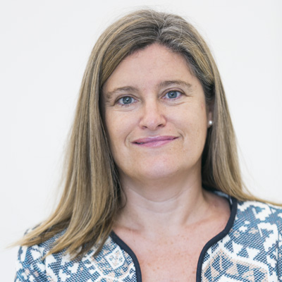

Susana Marcos Celestino es una destacada física española especializada en óptica visual y biofotónica. Su trayectoria se centra en avances para mejorar la visión humana mediante innovaciones en diagnóstico oftalmológico y corrección de defectos visuales.
Se licenció en Físicas por la Universidad de Salamanca, se doctoró en el CSIC y realizó una estancia postdoctoral de tres años en la Universidad de Harvard. Posteriormente, dirigió el Grupo de Óptica Visual y Biofotónica en el Instituto de Óptica "Daza de Valdés" del CSIC, del que fue directora entre 2008 y 2012.
Ha liderado investigaciones multidisciplinares que combinan física, óptica, biología y oftalmología para entender la visión humana y desarrollar instrumentos de diagnóstico. Es inventora de 17-26 familias de patentes (muchas licenciadas a la industria, como a Essilor), cofundadora de spin-offs como Plenoptika y 2EyesVision, y ha publicado más de 220 artículos altamente citados. Recientemente, es profesora de Oftalmología en el Flaum Eye Institute de la Universidad de Rochester.
| Premio | Año |
|---|---|
| Premio Nacional de Investigación Leonardo Torres Quevedo | 2019 |
| Medalla Santiago Ramón y Cajal | 2019 |
| Premio Edgar D. Tillyer | 2025 |
| Premio Rey Jaime I en Nuevas Tecnologías | 2017 |
| Premio Física, Innovación y Tecnología | 2015 |
| Medalla Adolph Lomb | 2002 |
| ICO Prize | 2007 |